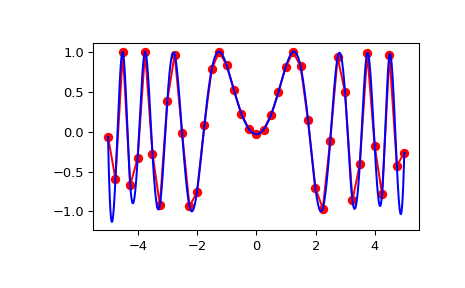

scipy.interpolate.interp2d#
- class scipy.interpolate.interp2d(x, y, z, kind='linear', copy=True, bounds_error=False, fill_value=None)[source]#
Deprecated since version 1.10.0:
interp2dis deprecated in SciPy 1.10 and will be removed in SciPy 1.14.0.For legacy code, nearly bug-for-bug compatible replacements are
RectBivariateSplineon regular grids, andbisplrep/bisplevfor scattered 2D data.In new code, for regular grids use
RegularGridInterpolatorinstead. For scattered data, preferLinearNDInterpolatororCloughTocher2DInterpolator.For more details see https://scipy.github.io/devdocs/notebooks/interp_transition_guide.html
Interpolate over a 2-D grid.
x, y and z are arrays of values used to approximate some function f:
z = f(x, y)which returns a scalar value z. This class returns a function whose call method uses spline interpolation to find the value of new points.If x and y represent a regular grid, consider using
RectBivariateSpline.If z is a vector value, consider using
interpn.Note that calling
interp2dwith NaNs present in input values, or with decreasing values in x an y results in undefined behaviour.- Parameters:
- x, yarray_like
Arrays defining the data point coordinates. The data point coordinates need to be sorted by increasing order.
If the points lie on a regular grid, x can specify the column coordinates and y the row coordinates, for example:
>>> x = [0,1,2]; y = [0,3]; z = [[1,2,3], [4,5,6]]
Otherwise, x and y must specify the full coordinates for each point, for example:
>>> x = [0,1,2,0,1,2]; y = [0,0,0,3,3,3]; z = [1,4,2,5,3,6]
If x and y are multidimensional, they are flattened before use.
- zarray_like
The values of the function to interpolate at the data points. If z is a multidimensional array, it is flattened before use assuming Fortran-ordering (order=’F’). The length of a flattened z array is either len(x)*len(y) if x and y specify the column and row coordinates or
len(z) == len(x) == len(y)if x and y specify coordinates for each point.- kind{‘linear’, ‘cubic’, ‘quintic’}, optional
The kind of spline interpolation to use. Default is ‘linear’.
- copybool, optional
If True, the class makes internal copies of x, y and z. If False, references may be used. The default is to copy.
- bounds_errorbool, optional
If True, when interpolated values are requested outside of the domain of the input data (x,y), a ValueError is raised. If False, then fill_value is used.
- fill_valuenumber, optional
If provided, the value to use for points outside of the interpolation domain. If omitted (None), values outside the domain are extrapolated via nearest-neighbor extrapolation.
See also
RectBivariateSplineMuch faster 2-D interpolation if your input data is on a grid
bisplrep,bisplevSpline interpolation based on FITPACK
BivariateSplinea more recent wrapper of the FITPACK routines
interp1d1-D version of this function
RegularGridInterpolatorinterpolation on a regular or rectilinear grid in arbitrary dimensions.
interpnMultidimensional interpolation on regular grids (wraps
RegularGridInterpolatorandRectBivariateSpline).
Notes
The minimum number of data points required along the interpolation axis is
(k+1)**2, with k=1 for linear, k=3 for cubic and k=5 for quintic interpolation.The interpolator is constructed by
bisplrep, with a smoothing factor of 0. If more control over smoothing is needed,bisplrepshould be used directly.The coordinates of the data points to interpolate xnew and ynew have to be sorted by ascending order.
interp2dis legacy and is not recommended for use in new code. New code should useRegularGridInterpolatorinstead.Examples
Construct a 2-D grid and interpolate on it:
>>> import numpy as np >>> from scipy import interpolate >>> x = np.arange(-5.01, 5.01, 0.25) >>> y = np.arange(-5.01, 5.01, 0.25) >>> xx, yy = np.meshgrid(x, y) >>> z = np.sin(xx**2+yy**2) >>> f = interpolate.interp2d(x, y, z, kind='cubic')
Now use the obtained interpolation function and plot the result:
>>> import matplotlib.pyplot as plt >>> xnew = np.arange(-5.01, 5.01, 1e-2) >>> ynew = np.arange(-5.01, 5.01, 1e-2) >>> znew = f(xnew, ynew) >>> plt.plot(x, z[0, :], 'ro-', xnew, znew[0, :], 'b-') >>> plt.show()

Methods
__call__(x, y[, dx, dy, assume_sorted])Interpolate the function.